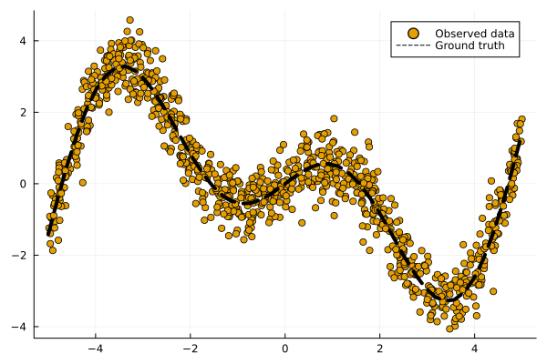
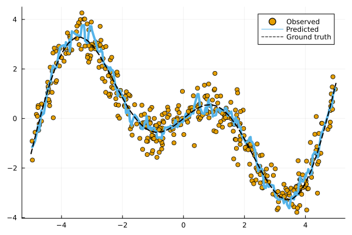
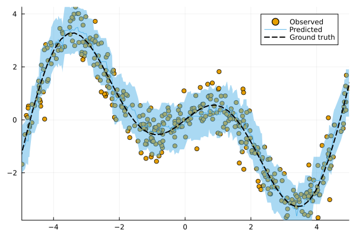
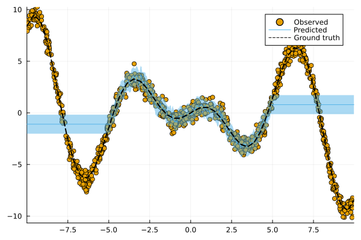

function get_data(;N=1000, xmax=3.0, noise=0.5, fun::Function=fun(X) = X * sin(X))
# Inputs:
d = Distributions.Uniform(-xmax, xmax)
X = rand(d, N)
X = MLJBase.table(reshape(X, :, 1))
# Outputs:
ε = randn(N) .* noise
y = @.(fun(X.x1)) + ε
y = vec(y)
return X, y
endPrediction Intervals for any Regression Model
Conformal Prediction in Julia — Part 3
probabilistic programming
uncertainty
conformal prediction
regression
Julia
This third post introduces conformal regression by going through a standard machine learning workflow using
MLJ.jl and ConformalPrediction.jl.

coverage rates. As coverage grows, so does
the width of the prediction interval.
This is the third (and for now final) part of a series of posts that introduce Conformal Prediction in Julia using ConformalPrediction.jl. The first post introduced Conformal Prediction for supervised classification tasks: we learned that conformal classifiers produce set-valued predictions that are guaranteed to include the true label of a new sample with a certain probability. In the second post we applied these ideas to a more hands-on example: we saw how easy it is to use ConformalPrediction.jl to conformalize a Deep Learning image classifier.
In this post, we will look at regression models instead, that is supervised learning tasks involving a continuous outcome variable. Regression tasks are as ubiquitous as classification tasks. For example, we might be interested in using a machine learning model to predict house prices or the inflation rate of the Euro or the parameter size of the next large language model. In fact, many readers may be more familiar with regression models than classification, in which case it may also be easier for you to understand Conformal Prediction (CP) in this context.
📖 Background
Before we start, let’s briefly recap what CP is all about. Don’t worry, we’re not about to deep-dive into methodology. But just to give you a high-level description upfront:
Conformal prediction (a.k.a. conformal inference) is a user-friendly paradigm for creating statistically rigorous uncertainty sets/intervals for the predictions of such models. Critically, the sets are valid in a distribution-free sense: they possess explicit, non-asymptotic guarantees even without distributional assumptions or model assumptions.
Intuitively, CP works under the premise of turning heuristic notions of uncertainty into rigorous uncertainty estimates through repeated sampling or the use of dedicated calibration data.
In what follows we will explore what CP can do by going through a standard machine learning workflow using MLJ.jl and ConformalPrediction.jl. There will be less focus on how exactly CP works, but references will point you to additional resources.
📈 Data
Most machine learning workflows start with data. For illustrative purposes we will work with synthetic data. The helper function below can be used to generate some regression data.
Figure 1 illustrates our observations (dots) along with the ground-truth mapping from inputs to outputs (line). We have defined that mapping \(f: \mathcal{X} \mapsto \mathcal{Y}\) as follows:
f(X) = X * cos(X)
🏋️ Model Training using MLJ
ConformalPrediction.jl is interfaced to MLJ.jl (Blaom et al. 2020): a comprehensive Machine Learning Framework for Julia. MLJ.jl provides a large and growing suite of popular machine learning models that can be used for supervised and unsupervised tasks. Conformal Prediction is a model-agnostic approach to uncertainty quantification, so it can be applied to any common supervised machine learning model.
The interface to MLJ.jl therefore seems natural: any (supervised) MLJ.jl model can now be conformalized using ConformalPrediction.jl. By leveraging existing MLJ.jl functionality for common tasks like training, prediction and model evaluation, this package is light-weight and scalable. Now let’s see how all of that works …
To start with, let’s split our data into a training and test set:
train, test = partition(eachindex(y), 0.4, 0.4, shuffle=true)Now let’s define a model for our regression task:
Model = @load KNNRegressor pkg = NearestNeighborModels
model = Model()
Have it your way!
Think this dataset is too simple? Wondering why on earth I’m not using XGBoost for this task? In the interactive version of this post you have full control over the data and the model. Try it out!
Using standard MLJ.jl workflows let us now first train the unconformalized model. We first wrap our model in data:
mach_raw = machine(model, X, y)Then we fit the machine to the training data:
MLJBase.fit!(mach_raw, rows=train, verbosity=0)Figure 2 below shows the resulting point predictions for the test data set:

How is our model doing? It’s never quite right, of course, since predictions are estimates and therefore uncertain. Let’s see how we can use Conformal Prediction to express that uncertainty.
🔥 Conformalizing the Model
We can turn our model into a conformalized model in just one line of code:
conf_model = conformal_model(model)By default conformal_model creates an Inductive Conformal Regressor (more on this below) when called on a <:Deterministic model. This behaviour can be changed by using the optional method key argument.
To train our conformal model we can once again rely on standard MLJ.jl workflows. We first wrap our model in data:
mach = machine(conf_model, X, y)Then we fit the machine to the data:
MLJBase.fit!(mach, rows=train, verbosity=0)Now let us look at the predictions for our test data again. The chart below shows the results for our conformalized model. Predictions from conformal regressors are range-valued: for each new sample the model returns an interval \((y_{\text{lb}},y_{\text{ub}})\in\mathcal{Y}\) that covers the test sample with a user-specified probability \((1-\alpha)\), where \(\alpha\) is the expected error rate. This is known as the marginal coverage guarantee and it is proven to hold under the assumption that training and test data are exchangeable.

Intuitively, a higher coverage rate leads to larger prediction intervals: since a larger interval covers a larger subspace of \(\mathcal{Y}\), it is more likely to cover the true value.
I don’t expect you to believe me that the marginal coverage property really holds. In fact, I couldn’t believe it myself when I first learned about it. If you like mathematical proofs, you can find one in this tutorial, for example. If you like convincing yourself through empirical observations, read on below …
🧐 Evaluation
To verify the marginal coverage property empirically we can look at the empirical coverage rate of our conformal predictor (see Section 3 of the tutorial for details). To this end our package provides a custom performance measure emp_coverage that is compatible with MLJ.jl model evaluation workflows. In particular, we will call evaluate! on our conformal model using emp_coverage as our performance metric. The resulting empirical coverage rate should then be close to the desired level of coverage.
model_evaluation =
evaluate!(_mach, operation=MLJBase.predict, measure=emp_coverage, verbosity=0)
println("Empirical coverage: $(round(model_evaluation.measurement[1], digits=3))")
println("Coverage per fold: $(round.(model_evaluation.per_fold[1], digits=3))")Empirical coverage: 0.902
Coverage per fold: [0.94, 0.904, 0.874, 0.874, 0.898, 0.922]✅ ✅ ✅ Great! We got an empirical coverage rate that is slightly higher than desired 😁 … but why isn’t it exactly the same?
In most cases it will be slightly higher than desired, since \((1-\alpha)\) is a lower bound. But note that it can also be slightly lower than desired. That is because the coverage property is “marginal” in the sense that the probability is averaged over the randomness in the data. For most purposes a large enough calibration set size (\(n>1000\)) mitigates that randomness enough. Depending on your choices above, the calibration set may be quite small (set to 500), which can lead to coverage slack (see Section 3 in the tutorial).
So what’s happening under the hood?
Inductive Conformal Prediction (also referred to as Split Conformal Prediction) broadly speaking works as follows:
- Partition the training into a proper training set and a separate calibration set
- Train the machine learning model on the proper training set.
- Using some heuristic notion of uncertainty (e.g., absolute error in the regression case), compute nonconformity scores using the calibration data and the fitted model.
- For the given coverage ratio compute the corresponding quantile of the empirical distribution of nonconformity scores.
- For the given quantile and test sample \(X_{\text{test}}\), form the corresponding conformal prediction set like so: \(C(X_{\text{test}})=\{y:s(X_{\text{test}},y) \le \hat{q}\}\)
🔃 Recap
This has been a super quick tour of ConformalPrediction.jl. We have seen how the package naturally integrates with MLJ.jl, allowing users to generate rigorous predictive uncertainty estimates for any supervised machine learning model.
Are we done?
Quite cool, right? Using a single API call we are able to generate rigorous prediction intervals for all kinds of different regression models. Have we just solved predictive uncertainty quantification once and for all? Do we even need to bother with anything else? Conformal Prediction is a very useful tool, but like so many other things, it is not the final answer to all our problems. In fact, let’s see if we can take CP to its limits.
The helper function to generate data from above takes an optional argument xmax. By increasing that value, we effectively expand the domain of our input. Let’s do that and see how our conformal model does on this new out-of-domain data.

Whooooops 🤕 … looks like we’re in trouble: in Figure 4 the prediction intervals do not cover out-of-domain test samples well. What happened here?
By expanding the domain of out inputs, we have violated the exchangeability assumption. When that assumption is violated, the marginal coverage property does not hold. But do not despair! There are ways to deal with this.
📚 Read on
If you are curious to find out more, be sure to read on in the docs. There are also a number of useful resources to learn more about Conformal Prediction, a few of which I have listed below:
- A Gentle Introduction to Conformal Prediction and Distribution-Free Uncertainty Quantification by Angelopoulos and Bates (2022).
- Awesome Conformal Prediction repository by Manokhin (2022)
- MAPIE: a comprehensive Python library for conformal prediction.
- My previous two blog posts.
Enjoy!
References
Angelopoulos, Anastasios N., and Stephen Bates. 2021. “A Gentle Introduction to Conformal Prediction and Distribution-Free Uncertainty Quantification.” https://arxiv.org/abs/2107.07511.
Blaom, Anthony D., Franz Kiraly, Thibaut Lienart, Yiannis Simillides, Diego Arenas, and Sebastian J. Vollmer. 2020. “MLJ: A Julia Package for Composable Machine Learning.” Journal of Open Source Software 5 (55): 2704. https://doi.org/10.21105/joss.02704.
Citation
BibTeX citation:
@online{altmeyer2022,
author = {Patrick Altmeyer},
title = {Prediction {Intervals} for Any {Regression} {Model}},
date = {22-12-12},
url = {https://www.paltmeyer.com/blog//blog/posts/conformal-regression},
langid = {en}
}
For attribution, please cite this work as:
Patrick Altmeyer. 22AD. “Prediction Intervals for Any Regression
Model.” December 12, 22AD. https://www.paltmeyer.com/blog//blog/posts/conformal-regression.